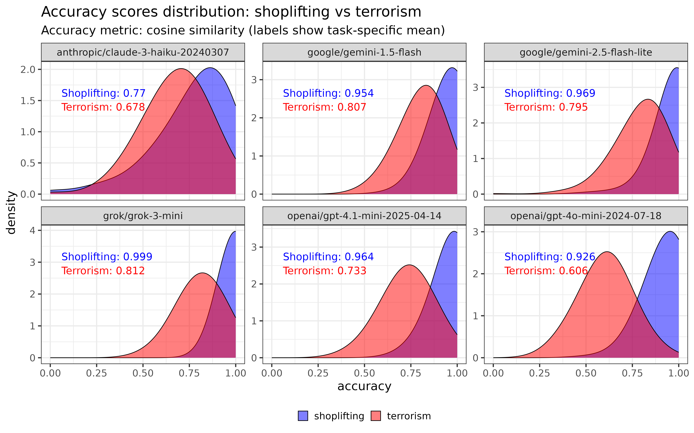

| Contrast | Odds ratio | Std. Err. | Accuracy (shoplifting) | Accuracy (terrorism) | p | |
|---|---|---|---|---|---|---|
| Terrorism / Shoplifting | 0.398 | 0.018 | 0.927 | 0.843 | <0.001 | *** |
Evaluating LLM summarisation in high-risk, public-sector contexts
This project evaluates how reliably large language models (LLMs) preserve risk-relevant details when summarising long procedural texts, such as sentencing remarks and offending histories. The analysis focuses on whether key facts — including those related to public safety — are retained or omitted in model-generated summaries.
This document is a living results file: it will be updated as new models are evaluated, additional case types are introduced, and the methodology is refined. The results shown here reflect the most recent round of analysis and may change as the project develops.
Results (so far)
Exact match
Basic model
Model specification
We fit a binomial mixed-effects logistic regression to estimate the probability that a model includes a correct fact in its summary. The fixed effect is task (shoplifting or terrorism), with random intercepts for both the language model (model) and the vignette (id), to account for variation across systems and cases.
The model equation is:
\[ \text{logit} \left( \Pr(\text{correct}) \right) = \beta_0 + \beta_1 \cdot \texttt{task}_{\text{terrorism}} + u_{\texttt{model}} + u_{\texttt{id}} \]
Where:
- \(\beta_0\) is the intercept (for shoplifting),
- \(\beta_1\) captures the effect of the terrorism task,
- \(u_{\texttt{model}} \sim \mathcal{N}(0, \sigma^2\_{\text{model}})\) is the random effect for each LLM,
- \(u_{\texttt{id}} \sim \mathcal{N}(0, \sigma^2\_{\text{id}})\) is the random effect for each vignette.
The overall accuracy of all LLMs for shoplifting was 0.93, and for terrorism was 0.84. The odds ratio is 0.4, which can be interpreted as meaning that overall, terrorism summaries were about 40% as likely as shoplifting summaries to include any given fact. However, there is wide variance in performance between different LLMs. This is examined in the next section.
LLM-interaction model

Model specification
We fit a binomial mixed-effects logistic regression to estimate the probability that a model includes a correct fact in its summary. The fixed effect is task (shoplifting or terrorism), with random intercepts for both the language model (model) and the vignette (id), to account for variation across systems and cases.
The model equation is:
\[ \text{logit} \left( \Pr(\text{correct}) \right) = \beta_0 + \beta_1 \cdot \texttt{task} + \beta_2 \cdot \texttt{model} + \beta_3 \cdot (\texttt{task} \times \texttt{model}) + u_{\texttt{id}} \\ \quad u_{\texttt{id}} \sim \mathcal{N}(0, \sigma^2) \]
Where:
- \(\beta_0\) is the intercept (baseline log-odds of including a correct fact for the reference model on the shoplifting task),
- \(\beta_1\) captures the main effect of
task(terrorism vs shoplifting), - \(\beta_2\) captures the main effect of
model(differences between language models), - \(\beta_3\) captures the interaction between
taskandmodel— i.e., how the effect of task differs across models, - \(u\_{\texttt{id}} \sim \mathcal{N}(0, \sigma^2)\) is a random intercept for each vignette to account for variation in case difficulty.
| Contrast | Model | Odds ratio | Std. Err. | Accuracy (shoplifting) | Accuracy (terrorism) | p | |
|---|---|---|---|---|---|---|---|
| Terrorism / Shoplifting | anthropic/claude-3-haiku-20240307 | 0.669 | 0.048 | 0.771 | 0.694 | <0.001 | *** |
| Terrorism / Shoplifting | google/gemini-1.5-flash | 0.726 | 0.102 | 0.954 | 0.937 | 0.023 | * |
| Terrorism / Shoplifting | google/gemini-2.5-flash-lite | 0.390 | 0.060 | 0.969 | 0.924 | <0.001 | *** |
| Terrorism / Shoplifting | grok/grok-3-mini | 0.013 | 0.009 | 0.999 | 0.924 | <0.001 | *** |
| Terrorism / Shoplifting | openai/gpt-4.1-mini-2025-04-14 | 0.382 | 0.044 | 0.941 | 0.860 | <0.001 | *** |
| Terrorism / Shoplifting | openai/gpt-4o-mini-2024-07-18 | 0.203 | 0.020 | 0.926 | 0.718 | <0.001 | *** |
It is evident that the smallest difference between shoplifting and terrorism is Gemini 1.5 (OR 0.73). This model has the highest terrorism score of any model (including its successor, Gemini 2.5). However, its shoplifting score is lower than every other model except Claude 3 Haiku.
Cosine similarity

Basic model
Model specification
We fit a binomial mixed-effects logistic regression to estimate the probability that a model includes a correct fact in its summary. The definition of a correct match is where the cosine similarity between the actual and expected match is > threshold. The threshold is defined in 2__cosine_similarity.py and at the time of writing is set to 0.85.
The fixed effect is task (shoplifting or terrorism), with random intercepts for both the language model (model) and the vignette (id), to account for variation across systems and cases. The model equation is:
\[ \text{logit} \left( \Pr(\text{correct}) \right) = \beta_0 + \beta_1 \cdot \texttt{task}_{\text{terrorism}} + u_{\texttt{model}} + u_{\texttt{id}} \]
Where:
- \(\beta_0\) is the intercept (for shoplifting),
- \(\beta_1\) captures the effect of the terrorism task,
- \(u_{\texttt{model}} \sim \mathcal{N}(0, \sigma^2\_{\text{model}})\) is the random effect for each LLM,
- \(u_{\texttt{id}} \sim \mathcal{N}(0, \sigma^2\_{\text{id}})\) is the random effect for each vignette.
| Contrast | Model | Odds ratio | Std. Err. | Accuracy (shoplifting) | Accuracy (terrorism) | p | |
|---|---|---|---|---|---|---|---|
| Terrorism / Shoplifting | anthropic/claude-3-haiku-20240307 | 0.624 | 0.045 | 0.770 | 0.678 | <0.001 | *** |
| Terrorism / Shoplifting | google/gemini-1.5-flash | 0.202 | 0.025 | 0.954 | 0.807 | <0.001 | *** |
| Terrorism / Shoplifting | google/gemini-2.5-flash-lite | 0.122 | 0.017 | 0.969 | 0.795 | <0.001 | *** |
| Terrorism / Shoplifting | grok/grok-3-mini | 0.004 | 0.003 | 0.999 | 0.812 | <0.001 | *** |
| Terrorism / Shoplifting | openai/gpt-4.1-mini-2025-04-14 | 0.103 | 0.013 | 0.964 | 0.733 | <0.001 | *** |
| Terrorism / Shoplifting | openai/gpt-4o-mini-2024-07-18 | 0.121 | 0.012 | 0.926 | 0.606 | <0.001 | *** |
LLM-interaction model
Model specification
As with the exact match, we have a dataset of binary values (matched or not matched). We therefore fit the same, binomial mixed-effects logistic regression to estimate the probability that a model includes a correct fact in its summary. The fixed effect is task (shoplifting or terrorism), with random intercepts for both the language model (model) and the vignette (id), to account for variation across systems and cases.
The model equation is:
\[ \text{logit} \left( \Pr(\text{correct}) \right) = \beta_0 + \beta_1 \cdot \texttt{task} + \beta_2 \cdot \texttt{model} + \beta_3 \cdot (\texttt{task} \times \texttt{model}) + u_{\texttt{id}} \\ \quad u_{\texttt{id}} \sim \mathcal{N}(0, \sigma^2) \]
Where:
- \(\beta_0\) is the intercept (baseline log-odds of including a correct fact for the reference model on the shoplifting task),
- \(\beta_1\) captures the main effect of
task(terrorism vs shoplifting), - \(\beta_2\) captures the main effect of
model(differences between language models), - \(\beta_3\) captures the interaction between
taskandmodel— i.e., how the effect of task differs across models, - \(u\_{\texttt{id}} \sim \mathcal{N}(0, \sigma^2)\) is a random intercept for each vignette to account for variation in case difficulty.
| Contrast | Odds ratio | Std. Err. | Accuracy (shoplifting) | Accuracy (terrorism) | p | |
|---|---|---|---|---|---|---|
| Terrorism / Shoplifting | 0.199 | 0.008 | 0.93 | 0.738 | <0.001 | *** |
The model code can be found in the run_glm() and run_gap_glm() functions.